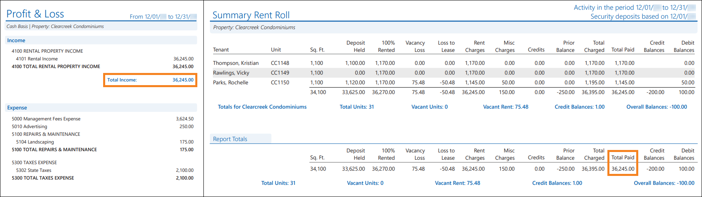

Source: https://rmxhelp.rentmanager.com/Topics/Express/KB/Report-Summary-Rent-Roll-Profit-Loss.htm
Summary Rent Roll and Profit & Loss
Both the Summary Rent Roll and Profit & Loss reports provide information on income from tenant payments, but each examines transactions from different sources. The Summary Rent Roll displays an itemized list of payments and credits for each tenant, while the Profit & Loss report displays income across various general ledger (GL) accounts. These reports are typically compared at the end of the period when you are closing their books, or when you are looking to refinance or sell the property.
Warning
The information contained here does not replace the advice of an accountant. If you are unclear about how to interpret the data presented in the related reports, please consult your accountant.
The Summary Rent Roll report tracks transaction activity on tenant accounts over a specified period of time. You can examine held security deposits for each of these tenants, as well as vacancy loss and loss to lease totals. This report also provides a breakdown of totals for rent and non-rent charges, credits, prior balances, charges, payments, and credit and debit balances and is a good report to provide to your bank when they request to view your income.
The Profit & Loss report displays income and expense GL accounts for selected properties or owners across a date range. This P&L report also displays the net income to track the financial impact of the selected properties.
Related Privileges
| Group | Privilege | Column |
|---|---|---|
| Letter/Email Templates/Reports/Packets | Run reports | Enabled |
| Run accounting reports | Enabled |
Additionally, on the Reports tab, you must have access to Summary Rent Roll and Profit & Loss.
For more information, refer to Control User Access.
When run with comparable report options, the Summary Rent Roll report's Total Paid column matches the Profit & Loss report's Total Income field. However, as these reports do not always include identical data, these values may differ even with those report options selected.

Report Options
To populate comparable reports, use the report option combinations listed in the table below. Follow these guidelines to generate a Summary Rent Roll and Profit & Loss that complement each other. Report options not mentioned do not affect comparability.
| Summary Rent Roll | Profit & Loss | Description |
|---|---|---|
|
Date Range |
Date Range |
The same date range must be selected for both reports. |
|
n/a |
Accounting Method |
Select Cash as the accounting method. The Summary Rent Roll report automatically populates on a cash basis. |
|
Properties/Owners to Include |
Properties/Owners to Include |
The same properties, property group, or owner(s) must be selected for both reports. |
|
Report Method |
n/a |
Select Activity and prior balances or Only activity in the period. The Profit & Loss report automatically populates current, past, and future tenants. |
Troubleshooting Balances That Are Different
While running the reports with the suggested report options above allows the reports to examine the same data, there are other factors that can cause discrepancies between these value totals.
GPR Loss to Lease
Loss to lease is calculated using the formula below:
Loss to Lease = Market Rent – Actual Rent
When gross potential rent (GPR) is posted, tenants that are charged an amount that is lower than the unit's market rent are calculated as a positive loss to lease on the Summary Rent Roll report, but a negative loss to lease on the Profit & Loss report. The Summary Rent Roll always displays loss to lease in the report results, but the Profit & Loss only shows loss to lease if GPR has been posted. Posting GPR creates a journal entry to finalize the amounts, and therefore is what causes this calculation to show on the Profit & Loss.
Prospect Payments
The Summary Rent Roll report examines only tenant charge data, but the Profit & Loss report always includes tenant and prospect data. If prospect payments are collected during the selected date range, the Profit & Loss report's Total Income value is always greater than the Summary Rent Roll report's Total Paid value.
Credits
The Summary Rent Roll report includes tenant charges paid using credit allocations, but those charges are listed in a separate Credits column rather than the Total Paid column. The Profit & Loss report includes tenant and prospect charges paid using credit allocations and treats those credits as payments when calculating the Total Income value. To account for this, you can add the values in the values in the Summary Rent Roll report's Total Paid and Credits columns and compare that amount to the Profit & Loss report's Total Income value, though other variables may still result in a discrepancy between these numbers.
Payments Applied to Non-Income Accounts
The Summary Rent Roll report includes payments received from tenants regardless of the charge type associated with those transactions. However, the Profit & Loss report includes only payments linked to income-type GL accounts. If a payment is linked to a GL account that does not track income, such as a security deposit liability account, that payment is not included in the Profit & Loss report's Total Income value.
Payment or Credit Dates
The Summary Rent Roll report includes payments received before the date range of the report, while the Profit & Loss report includes only charges paid within the date range of the report, even if the payment was received or the credit was allocated before the report’s date range. For example, if you run these reports for the month of May and a tenant prepaid their rent in April, their payment is included in the Summary Rent Roll report's Total Paid value, but is not included in the Profit & Loss report's Total Income value.
To identify transactions causing a discrepancy, on the Profit & Loss report, you can click the amounts for any income GL accounts to generate a General Ledger report for that account using the same date range and properties/owners. Review the charge types for income line items in the Type column to locate non-income charges (i.e., REALOC, PYALOC, PPALOC CRALOC).
Transactions from Non-Tenant Sources
The Summary Rent Roll report includes only payments associated with tenant accounts, but the Profit & Loss report includes all transactions associated with an income account (e.g., journal entries, other deposit incomes). To identify transactions causing a discrepancy, on the Profit & Loss report, you can click the amounts for any income GL accounts to generate a General Ledger report for that account using the same date range and properties/owners. Review the charge types for income line items in the Type column to locate non-tenant income charges (i.e., BEGBAL, BNKDEP, CC CHG, CC CRDT, CHECK, JOURNL).